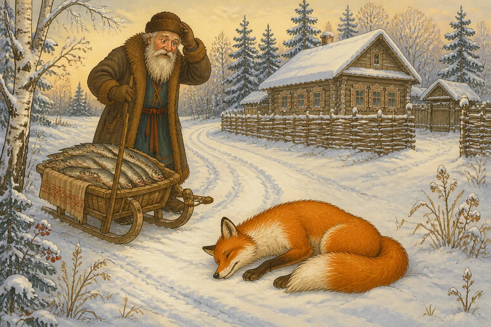
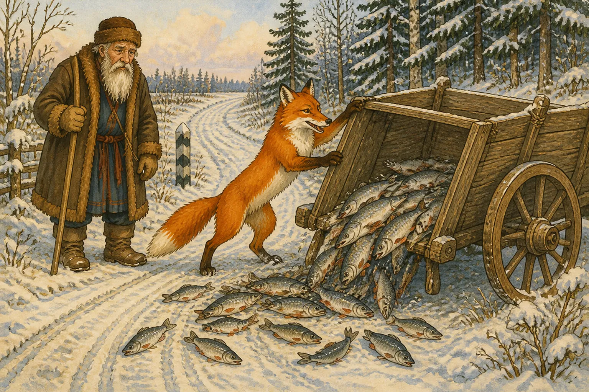
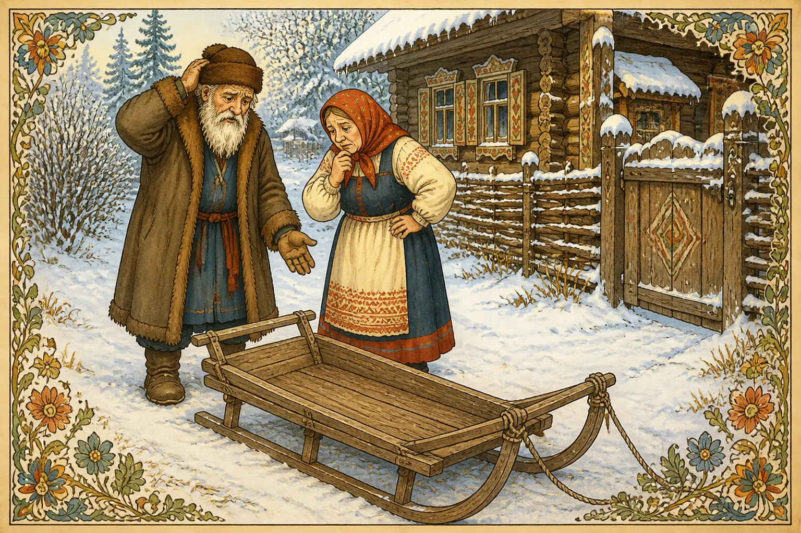
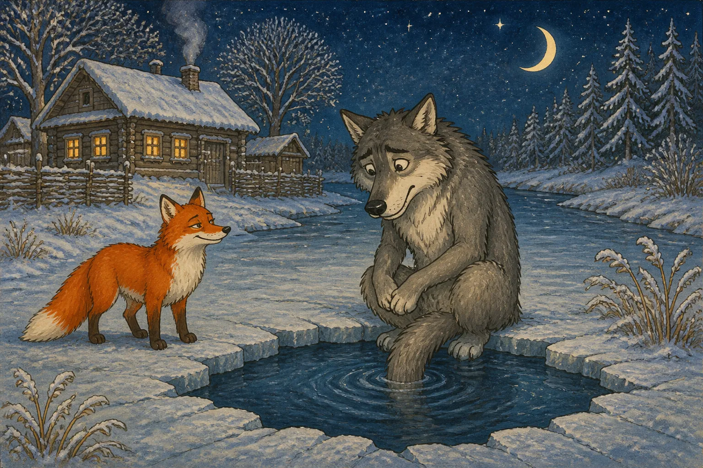
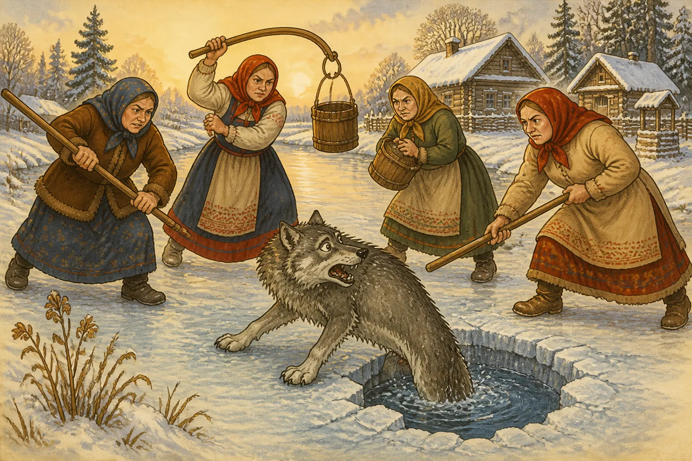
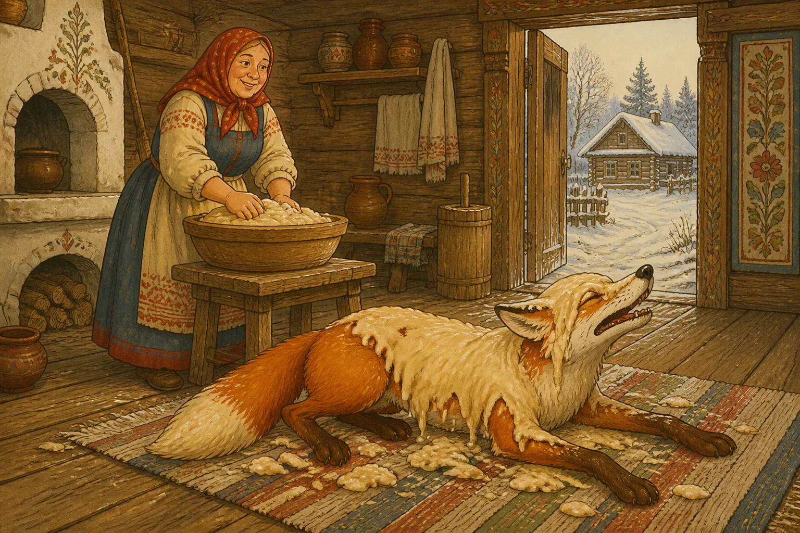

Жили-были дед да баба. Поехал однажды дед за рыбой, наловил полный воз и покатил домой. Едет он зимней дорогой, смотрит: лежит на снегу лисичка, хвостом укрылась, будто мёртвая.
Дед остановился, слез с саней и говорит:
— Вот будет бабе воротник на шубу!
Положил лисичку на воз, а сам пошёл впереди. Лисичка только того и ждала. Приподнялась тихонько и стала рыбку за рыбкой с воза сбрасывать: одну — в снег, другую — в снег, третью — туда же. Так всю рыбу и выкинула,

а потом сама спрыгнула и убежала.
Приехал дед домой.
— Ну, баба, — говорит, — какой я тебе подарок привёз: и рыбы воз, и воротник на шубу!
Пошла баба к возу, смотрит: ни рыбы, ни воротника.

Стала она деда бранить, а дед только руками развёл:
— Ах, хитрая лисичка! Обманула меня.
А лиса тем временем собрала рыбу на дороге, села под кустом и ест себе помаленьку.
Идёт мимо волк. Увидел рыбу, облизнулся.
— Здравствуй, лисичка-сестричка! Дай мне рыбки.
— Сам налови, волчик-братик.
— Да я не умею.
— Эка невидаль! Ступай к проруби, опусти хвост в воду и приговаривай: «Ловись, рыбка, мала и велика!» Рыба сама на хвост нацепится. Только сиди долго, не шевелись.
Поверил волк. Пошёл к реке, нашёл прорубь, опустил хвост в ледяную воду и сидит. Ночь морозная,

звёзды над лесом острые, снег поскрипывает. Волк приговаривает:
— Ловись, рыбка, мала и велика! Ловись, рыбка, мала и велика!
А лисичка ходит вокруг да шепчет:
— Мёрзни, мёрзни, волчий хвост!
— Что ты говоришь? — спрашивает волк.
— То же, что и ты: ловись, рыбка, мала и велика.
Сидел волк до рассвета. Хвост его во льду крепко-накрепко замёрз. Попробовал встать — не может.
Утром пришли женщины за водой. Увидели волка у проруби и закричали:
— Волк! Волк!
Кто коромыслом, кто ведром, кто палкой — все на него.

Волк дёрнулся изо всей силы, хвост во льду оставил и пустился в лес без оглядки.
Бежит он, злится:
— Вот погоди же, лиса! Попадёшься мне — не прощу!
А лисичка тем временем забралась в избу, где баба тесто месила. Нашла кадку, сунула туда голову, обмазалась тестом и легла на дороге, стонет:

— Ох, голова болит! Ох, бедная я, битая-перебитая!
Подходит волк:
— Это ты меня обманула! Из-за тебя мне хвост оторвали.
— Эх, волчик-братик, — жалобно говорит лиса, — тебе только хвост повредили, а мне всю голову разбили. Видишь, мозги наружу выступили. Ты ещё ходить можешь, а я и подняться не в силах.
Пожалел волк лису.
— Садись на меня, довезу.
Лиса взобралась ему на спину, едет и тихонько припевает:
— Битый небитого везёт, битый небитого везёт.
— Что ты, лиса, говоришь?
— Говорю: битый битого везёт.
Волк поверил и потащил её дальше. А лисичка-сестричка знай себе улыбается: сама сыта, хвост цел, да ещё и верхом едет.